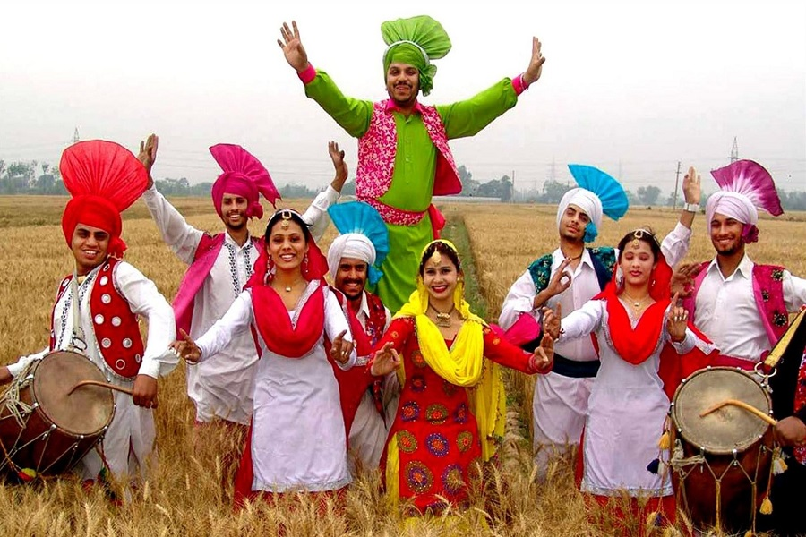

Welcome to Punjab!

Punjab, a state in northern India, is renowned for its vibrant and dynamic culture, deeply rooted in its history, agricultural prosperity, and religious diversity. The culture of Punjab is characterized by its lively festivals, energetic music and dance, and hearty cuisine. Festivals such as Baisakhi, Lohri, and Diwali are celebrated with great enthusiasm, reflecting the community's joyous spirit and deep-rooted traditions. Punjabi music and dance forms, like Bhangra and Giddha, are known for their exuberance and rhythmic beats, often performed during celebrations and cultural events. The cuisine of Punjab is famous for its rich flavors and generous use of dairy, with dishes like Butter Chicken, Sarson da Saag with Makki di Roti, and Amritsari Kulcha being iconic. The people of Punjab, known for their warmth and hospitality, have a strong sense of community and pride in their heritage. Punjabi attire, such as the colorful phulkari embroidery and traditional turbans, showcases the region's vibrant aesthetic. Additionally, the state's significant Sikh heritage, with landmarks like the Golden Temple in Amritsar, highlights Punjab's spiritual and historical significance. Overall, the culture of Punjab is a spirited blend of tradition, festivity, and resilience, reflecting the heart and soul of its people.